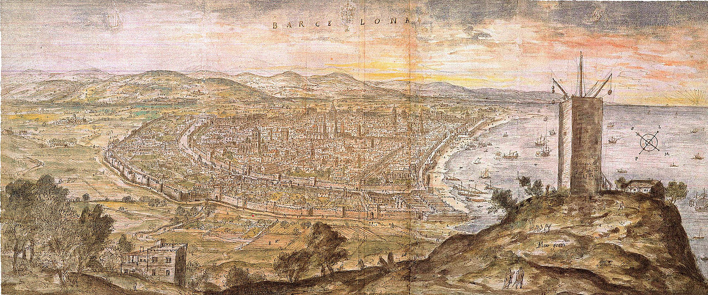

Welcome to Barcelona City Fan Page .
History.
The city itself was founded by the Romans who set up a colony called Barcino at the end of the 1st century BC. The colony had some thousand inhabitants and was bounded by a defensive wall, the remains of which can still be seen in the old town.
For over 200 years, Barcelona was under Muslim rule, and, following the Christian reconquest, it became a county of the Carolingian Empire and one of the main residences of the court of the Crown of Aragon. The fruitful medieval period established Barcelona's position as the economic and political centre of the Western Mediterranean. The city's Gothic Quarter bears witness to the splendour enjoyed by the city from the 13th to the 15th centuries.
From the 15th to 18th centuries Barcelona entered a period of decline, while it struggled to maintain its economic and political independence. This struggle ended in 1714, when the city fell to the Bourbon troops and Catalonia's and Catalans' rights and privileges were suppressed.
A period of cultural recovery began in the mid-19th century with the arrival of the development of the textile industry. During this period, which was known as the Renaixença, Catalan regained prominence as a literary language.
The 20th century ushered in widespread urban renewal throughout Barcelona city, culminating in its landmark Eixample district, which showcases some of Barcelona's most distinctive Catalan art-nouveau, or modernista, buildings. The Catalan Antoni Gaudí, one of the most eminent architects, designed buildings such as the Casa Milà (known as La Pedrera, the Catalan for stone quarry), the Casa Batlló and the Sagrada Família church, which have become world-famous landmarks.
The freedoms achieved during this period were severely restricted during the Civil War in 1936 and the subsequent dictatorship. With the reinstatement of democracy in 1978, Barcelonasociety regained its economic strength and the Catalan language was restored. The city's hosting of the 1992 Olympic Games gave fresh impetus to Barcelona's potential and reaffirmed its status as a major metropolis.
In 2004, the Forum of Cultures reclaimed industrial zones to convert them into residential districts. An example of the renewed vigour with which Barcelona is looking towards the 21st century
